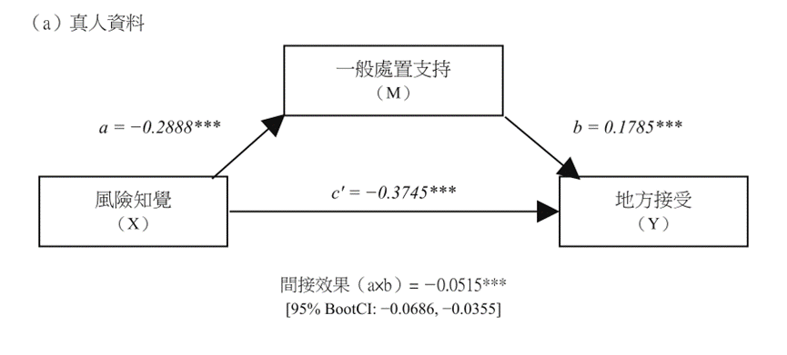

數位分身（digital twin）
是指透過輸入真實實體之資料，以虛擬模型模擬而來的數位實體，可模擬真實世界的行為與狀態。
近年許多研究使用LLM模擬人類樣本進行社會科學調查。其反映真實世界的能力，稱為演算法忠實度（algorithmic fidelity）（Argyle et al., 2023）。
LOCAL LLM / DIGITAL TWIN
是指透過輸入真實實體之資料，以虛擬模型模擬而來的數位實體，可模擬真實世界的行為與狀態。
近年許多研究使用LLM模擬人類樣本進行社會科學調查。其反映真實世界的能力，稱為演算法忠實度（algorithmic fidelity）（Argyle et al., 2023）。
對核廢的恐懼、制度信任、程序公平與地方依附，均會影響最終處置設施設置的社會接受。
研究資料取自於2025年真人民調資料，涵蓋高放射性廢棄物處置認知、政策態度、政府信任、程序與參與、補償、核能風險及社會人口背景。
本模擬僅簡略地輸入受訪者之人口背景與部分核能相關變數，預測其地方接受度，與正式研究不同。
在正式研究中，係以真人問卷資料之除以下變數影響關係圖以外的所有變數作為LLM的輸入，再將LLM生成的風險知覺、一般處置接受與地方接受與真人問卷的關係做對比。

Ronald Coase: "If you torture the data long enough, it will confess to anything."
（引自 Gao et al., 2025）
winget install Python.Python.3.12winget install Ollama.Ollamapip install pandas openpyxl ollamaollama pull qwen3:8bollama run qwen3:8b以下展示結果以Qwen3 8B模型為例。
測試所使用的人物設定資料其中一列如下：
| ID | 居住地 | 性別 | 年齡 | 教育程度 | 職業 | 家庭平均月收入 | 政府信心 | 核能安全態度 | 核廢料分類知識 | 真人答案 |
|---|---|---|---|---|---|---|---|---|---|---|
| 1760 | 彰化縣北斗鎮 | 女性 | 40–50 | 國、初中 | 家庭主婦 | 30,001-50,000元 | 非常沒有信心 | 還算同意 | 回答錯誤或不知道 | 非常不同意 |
註：原始測試資料共 15 列。原始題目如下：
|
||||||||||
正確率：2/15（其中一次執行錯誤）
import json
import time
import os
import pandas as pd
import ollama
# =========================================================
# 1. 基本設定
# =========================================================
INPUT_FILE = "survey.xlsx"
OUTPUT_DIR = "output"
OUTPUT_FILE = os.path.join(
OUTPUT_DIR,
"survey_taide_result.xlsx"
)
MODEL_NAME = "qwen3:8b"
# 目前測試檔只有 15 筆，因此直接全部執行
TEST_MODE = False
# 用來記錄目前 Prompt／Persona 設計版本
PROMPT_VERSION = "qwen_persona_v2"
# =========================================================
# 2. 預測目標欄位
# =========================================================
TARGET_COLUMN = (
'假如您現在居住的「鄉鎮市區」符合存放核廢料的科學條件，'
'請問您同不同意臺灣政府在「您居住的鄉鎮市區」蓋核廢料貯存場？'
)
# =========================================================
# 3. Persona conditioning variables
#
# 注意：
# 1. 不包含 ID
# 2. 不包含 TARGET_COLUMN
# 3. 這些欄位會提供給 Qwen
# =========================================================
PERSONA_COLUMNS = [
"居住地",
"性別",
"年齡",
"教育程度",
"職業",
"家庭平均月收入",
'請問您對「臺灣政府能夠妥善監督與管理核廢料」有沒有信心？',
'請問您同不同意「隨著科學技術的進步，未來核能發電將愈來愈安全」？',
'國際上把核廢料分為「低階核廢料」、「中階核廢料」以及「高階核廢料」，請問哪一種不包括在臺灣對核廢料的分類裡面？'
]
# =========================================================
# 4. 建立 Persona
# =========================================================
def build_persona(row):
persona = f"""
以下是一位真實臺灣問卷受訪者的既有背景與回答資料。
【人口背景】
居住地：{row["居住地"]}
性別：{row["性別"]}
年齡：{row["年齡"]}
教育程度：{row["教育程度"]}
職業：{row["職業"]}
家庭平均月收入：{row["家庭平均月收入"]}
【政策態度與認知】
對「臺灣政府能夠妥善監督與管理核廢料」的信心：
{row['請問您對「臺灣政府能夠妥善監督與管理核廢料」有沒有信心？']}
對「隨著科學技術的進步，未來核能發電將愈來愈安全」的態度：
{row['請問您同不同意「隨著科學技術的進步，未來核能發電將愈來愈安全」？']}
核廢料分類知識：
{row['國際上把核廢料分為「低階核廢料」、「中階核廢料」以及「高階核廢料」，請問哪一種不包括在臺灣對核廢料的分類裡面？']}
"""
return persona.strip()
# =========================================================
# 5. 建立 Prompt
# =========================================================
def build_prompt(persona):
prompt = f"""
{persona}
現在請你模擬這位受訪者本人回答另一道問卷題目。
【重要研究規則】
1. 請以這位受訪者本人最可能的立場回答。
2. 上述人口背景、政策態度、信任程度與核廢料知識狀態，
都是此受訪者已知的真實問卷資料，
請將它們視為模擬此人的依據。
3. 不要以人工智慧、專家、政府官員、
政策分析者或研究者的角度回答。
4. 不要回答你認為政策上「最正確」、
「最安全」或「最合理」的答案。
5. 只能根據已提供的受訪者資料推測答案。
6. 不要自行假設未提供的政黨傾向、
政治立場、家庭背景、核能專業知識
或其他個人資訊。
7. 本研究情境為臺灣。
8. 你的任務是預測這位受訪者在真實問卷中
最可能選擇的選項。
9. 請使用繁體中文。
10. 不需要進行政策倡議、安全教育、
科學知識說明或價值判斷。
11. 只輸出指定 JSON，
不要輸出 JSON 以外的任何文字。
【要預測的問題】
假如您現在居住的「鄉鎮市區」符合存放核廢料的科學條件，
請問您同不同意臺灣政府在「您居住的鄉鎮市區」
蓋核廢料貯存場？
請只從以下四個選項中選擇一個：
- 非常不同意
- 不太同意
- 還算同意
- 非常同意
請依照以下 JSON 格式回答：
{{
"predicted_answer": "四個選項其中之一",
"confidence": 0.00,
"reason": "用一句簡短繁體中文說明主要判斷依據"
}}
"""
return prompt.strip()
# =========================================================
# 6. 呼叫 Qwen
# =========================================================
def ask_qwen(persona):
prompt = build_prompt(persona)
try:
response = ollama.chat(
model=MODEL_NAME,
messages=[
{
"role": "system",
"content":
"你是一個用於社會科學研究的模擬受訪者系統。"
"你的任務是根據已知受訪者資料，"
"預測該受訪者最可能選擇的問卷答案。"
"你必須維持 persona 一致性，"
"不能以人工智慧助理、政策專家、"
"政府官員或研究者的立場回答。"
},
{
"role": "user",
"content": prompt
}
],
options={
"temperature": 0.7,
"seed": 42
}
)
text = response["message"]["content"].strip()
# -------------------------------------------------
# 清除模型可能加入的 Markdown code fence
# -------------------------------------------------
text = text.replace("```json", "")
text = text.replace("```JSON", "")
text = text.replace("```", "")
text = text.strip()
# -------------------------------------------------
# 解析 JSON
# -------------------------------------------------
result = json.loads(text)
predicted_answer = str(
result["predicted_answer"]
).strip()
confidence = float(
result["confidence"]
)
reason = str(
result["reason"]
).strip()
# -------------------------------------------------
# 檢查模型是否只使用有效選項
# -------------------------------------------------
valid_answers = [
"非常不同意",
"不太同意",
"還算同意",
"非常同意"
]
if predicted_answer not in valid_answers:
raise ValueError(
f"模型回傳無效答案：{predicted_answer}"
)
# -------------------------------------------------
# 檢查 confidence 是否在 0～1
# -------------------------------------------------
if confidence < 0 or confidence > 1:
raise ValueError(
f"confidence 超出 0～1：{confidence}"
)
# -------------------------------------------------
# 正常回傳
# -------------------------------------------------
return {
"Qwen_預測答案": predicted_answer,
"Qwen_信心": confidence,
"Qwen_理由": reason,
"Qwen_原始輸出": text,
"Qwen_錯誤": ""
}
except Exception as e:
# -------------------------------------------------
# 若模型輸出失敗或 JSON 解析失敗
# -------------------------------------------------
return {
"Qwen_預測答案": None,
"Qwen_信心": None,
"Qwen_理由": None,
"Qwen_原始輸出": None,
"Qwen_錯誤": str(e)
}
# =========================================================
# 7. 主程式
# =========================================================
def main():
# -----------------------------------------------------
# 建立 output 資料夾
# -----------------------------------------------------
os.makedirs(
OUTPUT_DIR,
exist_ok=True
)
# -----------------------------------------------------
# 讀取 Excel
# -----------------------------------------------------
df = pd.read_excel(
INPUT_FILE
)
print("")
print("========================================")
print("Qwen 社會數位分身測試")
print("========================================")
print(f"模型：{MODEL_NAME}")
print(f"Prompt版本：{PROMPT_VERSION}")
print(f"總樣本數：{len(df)}")
print("")
# -----------------------------------------------------
# 確認必要欄位是否存在
# -----------------------------------------------------
required_columns = (
["ID"]
+ PERSONA_COLUMNS
+ [TARGET_COLUMN]
)
missing_columns = [
column
for column in required_columns
if column not in df.columns
]
if missing_columns:
print("")
print("找不到以下 Excel 欄位：")
print("")
for column in missing_columns:
print(f"- {column}")
raise ValueError(
"Excel 欄位名稱與程式設定不一致，請檢查 survey.xlsx。"
)
# -----------------------------------------------------
# 決定要跑多少筆資料
# -----------------------------------------------------
if TEST_MODE:
work_df = df.head(5).copy()
else:
work_df = df.copy()
results = []
total = len(work_df)
# -----------------------------------------------------
# 逐位建立 Persona 並呼叫 Qwen
# -----------------------------------------------------
for n, (_, row) in enumerate(
work_df.iterrows(),
start=1
):
respondent_id = row["ID"]
print(
f"[{n}/{total}] "
f"正在模擬受訪者 ID={respondent_id}"
)
# 建立 Persona
persona = build_persona(row)
# 呼叫 Qwen
result = ask_qwen(persona)
# 紀錄模型與 Prompt 版本
result["Qwen_模型"] = MODEL_NAME
result["Prompt版本"] = PROMPT_VERSION
results.append(result)
# 稍微間隔，避免連續呼叫過於密集
time.sleep(0.2)
# -----------------------------------------------------
# 將預測結果轉成 DataFrame
# -----------------------------------------------------
result_df = pd.DataFrame(
results
)
# -----------------------------------------------------
# 合併原始問卷與 Qwen 預測結果
# -----------------------------------------------------
final_df = pd.concat(
[
work_df.reset_index(drop=True),
result_df.reset_index(drop=True)
],
axis=1
)
# -----------------------------------------------------
# 判斷 Qwen 是否完全命中真人答案
# -----------------------------------------------------
final_df["Qwen_是否預測正確"] = (
final_df["Qwen_預測答案"]
==
final_df[TARGET_COLUMN]
)
# -----------------------------------------------------
# 輸出 Excel
# -----------------------------------------------------
final_df.to_excel(
OUTPUT_FILE,
index=False
)
# -----------------------------------------------------
# 計算基本測試結果
# -----------------------------------------------------
valid_count = (
final_df["Qwen_預測答案"]
.notna()
.sum()
)
correct_count = (
final_df["Qwen_是否預測正確"]
.fillna(False)
.sum()
)
error_count = (
final_df["Qwen_錯誤"]
.astype(str)
.str.len()
.gt(0)
.sum()
)
# -----------------------------------------------------
# 顯示結果
# -----------------------------------------------------
print("")
print("========================================")
print("模擬完成")
print("========================================")
print(
f"成功產生預測："
f"{valid_count}/{total}"
)
print(
f"執行錯誤："
f"{error_count}/{total}"
)
print(
f"完全命中："
f"{correct_count}/{total}"
)
if total > 0:
accuracy = (
correct_count / total
)
print(
f"初步 Exact Accuracy："
f"{accuracy:.2%}"
)
print("")
print(
f"結果已輸出至：{OUTPUT_FILE}"
)
print("")
print("完成。")
# =========================================================
# 8. 執行主程式
# =========================================================
if __name__ == "__main__":
main()
你是一個用於社會科學研究的模擬受訪者系統。
你的任務是根據已知受訪者資料，
預測該受訪者最可能選擇的問卷答案。
你必須維持 persona 一致性，
不能以人工智慧助理、政策專家、
政府官員或研究者的立場回答。
以下是一位真實臺灣問卷受訪者的既有背景與回答資料。
【人口背景】
居住地：彰化縣北斗鎮
性別：女性
年齡：40歲~未滿50歲
教育程度：國、初中
職業：家庭主婦
家庭平均月收入：30,001-50,000元
【政策態度與認知】
對「臺灣政府能夠妥善監督與管理核廢料」的信心：
非常沒有信心
對「隨著科學技術的進步，未來核能發電將愈來愈安全」的態度：
還算同意
核廢料分類知識：
回答錯誤或不知道
現在請你模擬這位受訪者本人回答另一道問卷題目。
【重要研究規則】
1. 請以這位受訪者本人最可能的立場回答。
2. 上述人口背景、政策態度、信任程度與核廢料知識狀態，
都是此受訪者已知的真實問卷資料，
請將它們視為模擬此人的依據。
3. 不要以人工智慧、專家、政府官員、
政策分析者或研究者的角度回答。
4. 不要回答你認為政策上「最正確」、
「最安全」或「最合理」的答案。
5. 只能根據已提供的受訪者資料推測答案。
6. 不要自行假設未提供的政黨傾向、
政治立場、家庭背景、核能專業知識
或其他個人資訊。
7. 本研究情境為臺灣。
8. 你的任務是預測這位受訪者在真實問卷中
最可能選擇的選項。
9. 請使用繁體中文。
10. 不需要進行政策倡議、安全教育、
科學知識說明或價值判斷。
11. 只輸出指定 JSON，
不要輸出 JSON 以外的任何文字。
【要預測的問題】
假如您現在居住的「鄉鎮市區」符合存放核廢料的科學條件，
請問您同不同意臺灣政府在「您居住的鄉鎮市區」
蓋核廢料貯存場？
請只從以下四個選項中選擇一個：
- 非常不同意
- 不太同意
- 還算同意
- 非常同意
請依照以下 JSON 格式回答：
{
"predicted_answer": "四個選項其中之一",
"confidence": 0.00,
"reason": "用一句簡短繁體中文說明主要判斷依據"
}{
"predicted_answer": "非常不同意",
"confidence": 0.85,
"reason": "因對政府管理核廢料缺乏信心，且居住地可能面臨安全風險"
}
移除固定種子、維持溫度為 0.7。15 位受訪者 × 10 次，共 150 次模擬；輸出原始結果、各樣本總結與總體比較。
模型通常高度一致，但回答仍可能集中於中間選項。
正確率：1/15（以多次執行之預測結果眾數是否命中真人答案計算）
ID 1760 在 10 次重複模擬中，有 7 次預測為「非常不同意」、3 次為「不太同意」；預測結果的眾數與真人回答相同。
| 答案 | 真人次數 | 真人比例 | Qwen次數 | Qwen比例 |
|---|---|---|---|---|
| 非常不同意 | 9 | 60.0% | 18 | 12.7% |
| 不太同意 | 2 | 13.3% | 66 | 46.5% |
| 還算同意 | 1 | 6.7% | 56 | 39.4% |
| 非常同意 | 3 | 20.0% | 2 | 1.4% |
以下整理同一份 15 位受訪者問卷資料的本機數位分身測試，重複模擬用於觀察模型輸出的穩定性。
| LLM | 測試方式 | 測試結果特性 | 主要限制 |
|---|---|---|---|
| Qwen3 8B | 15 人 × 10 次 | 輸出多集中於「不太同意」與「還算同意」；技術成功率約 94.7%，同一人物設定的回答穩定。 | 中間化傾向明顯、極端態度遭壓縮；總體正確率約 10.6%。 |
| Llama 3.1 8B | 15 人 × 10 次 | 149 次有效輸出皆為「非常不同意」，表面上具有極高的一致性。 | 完全負向單一類別塌縮，無法保留個別受訪者差異。 |
| Gemma 3 12B | 15 人單次測試 | 回答分布於負向與中間選項，未出現「非常同意」。 | 呈現中間化，尚未重複測試以評估穩定性。 |
| Mistral NeMo 12B | 15 人單次測試 | 預測正確率為 26.7%；「非常不同意」回答居多。 | 具有較強的負向預設傾向，可能主導回答。 |
| Phi-4 14B | 15 人 × 10 次 | 148／150 次有效；多數回答為「不太同意」，重複結果穩定，總體正確率約 17.6%。 | 仍有中間化傾向。 |
| DeepSeek-R1 7B | 15 人單次測試 | 幾乎全部回答「不太同意」，少變異。 | 容易過度推理，且出現繁簡混用與回答格式控制問題。 |
| TAIDE 8B (Llama 3.1) | 15 人 × 10 次 | 149／150 次有效；75.8% 回答為「還算同意」，同一人物設定的主答案比例約 96%。 | 穩定地偏向正向中間選項；總體正確率約 6.0%，人物設定層級相關偏低。 |
同一人物設定的重複回答多半相近。
高一致性不等於高效度，仍須以真人問卷逐筆驗證，本模擬之實測結果較差。
完成本機模擬後，下一步可串接 API 進行模擬，使用性能更強之模型，並輸入更多樣本之資訊，最後與真人資料進行比對。